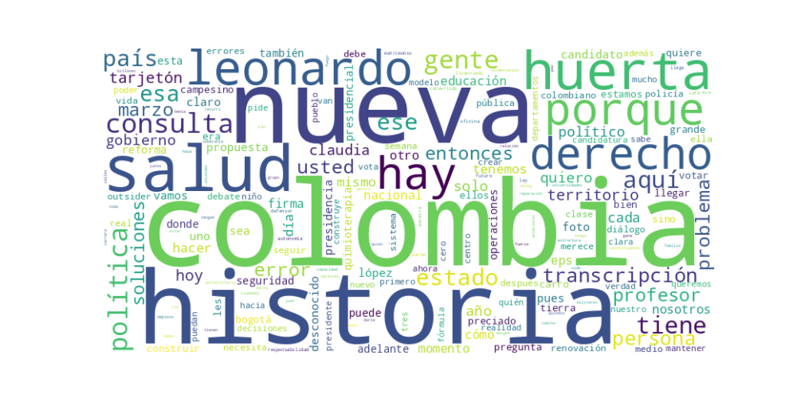

Seguidores: 16,657
1. Perfil de Comunicación: El estilo de comunicación del candidato Leonardo Huerta se caracteriza por ser predominantemente informal y cercano, con un claro intento de conectar emocionalmente con el ciudadano común. Utiliza un lenguaje popular y anecdótico, evitando tecnicismos complejos para hacer su mensaje accesible. Se presenta como un narrador de su propia historia, utilizando experiencias personales (su origen de barrio popular, su matrimonio, su paso por la Defensoría) para construir credibilidad y proximidad. Sin embargo, en temas específicos como salud o estructura del Estado, incorpora un tono más técnico y propositivo, derivado de su experiencia como profesor y funcionario.
2. Temas Principales: 1. Salud: Es el tema central y más recurrente. Lo enmarca como una "crisis profunda y estructural" y el "derecho más vulnerado". Aboga por una reforma integral con un "régimen de transición" para no afectar a los pacientes. Ejemplo: "La salud no puede seguir siendo un privilegio. Colombia merece: acceso digno, oportuno y para todos." 2. **Seg
Reporte de Análisis de Comunicación Política de Élite
Candidato: Leonardo Huerta (En contexto de campaña presidencial)
1. Resumen del Patrón de Éxito: La fórmula de éxito se basa en una comunicación emocionalmente inteligente y personalizada, que fusiona la cercanía humana con la propuesta técnica. Huerta no solo expone políticas; las enmarca dentro de una narrativa de transformación personal y nacional ("Una Nueva Historia"), usando su propia biografía como outsider ("El Desconocido") y sus experiencias (profesor, esposo) para validar su discurso. El éxito reside en convertir conceptos complejos (TIC, reforma de salud) en historias accesibles y cargadas de propósito, evitando el tono burocrático tradicional.
2. Tácticas de Comunicación Clave:
3. Temas de Mayor Resonancia:
4. Perfil de la Audiencia Implícita:
El lenguaje y los temas apuntan a una audiencia amplia, aspirante y fatigada del sistema. Especialmente: * Jóvenes y profesionales urbanos: Atraídos por el discurso de modernización (TIC, educación), meritocracia y renovación política. * Clase media y votantes indecisos: Resonan con las historias personales de esfuerzo (matrimonio, crédito), la crítica a sistemas burocráticos y la promesa de eficiencia. * Población rural y periurbana: Identificada con el mensaje de dignificación del campo y solución de problemas concretos (inundaciones, vías). La comunicación busca unir a estos grupos bajo una misma bandera: la de la "Nueva Historia", superando divisiones tradicionales.
5. Conclusión Estratégica:
La clave fundamental del poder de su discurso es la personificación de la política. Huerta no solo propone políticas; se ofrece como el personaje principal y el símbolo de la transformación que promete. Su biografía es su programa. Esto lo diferencia radicalmente del discurso político tradicional, que separa la figura del candidato de su plataforma técnica. Su potencia reside en que la política se vuelve una historia personal y colectiva de redención y progreso, donde él es tanto el narrador como el protagonista ejemplar. La estrategia fusiona el "storytelling" emocional con el "solution-selling" técnico, creando una marca política única: el técnico con corazón, el outsider con experiencia, el profesor de la nueva historia.

Caption: Hoy participamos de #ColombiaDigitalSummit Las TIC no son el futuro, son el presente. Conectividad real para todos: aprender, crear y programar. Así garantizamos derechos y hacemos de Colombia Una Nueva Historia. 🇨🇴 . . . . #Colombia #elecciones
Likes: 112 | Comentarios: 7 | Reproducciones: 1,561
Ver en InstagramCaption: La salud en Colombia no puede seguir esperando. Es momento de hacer lo que nadie se ha atrevido: reformarla de verdad. Así garantizamos UNA NUEVA HISTORIA para todos los colombianos. . . . . #medellin #teleantioquia #debate #presidencia #noticas
Likes: 198 | Comentarios: 9 | Reproducciones: 2,832
Ver en InstagramCaption: Ser el desconocido tiene una ventaja: no le debe nada a nadie. Sin maquinarias. Sin favores. Sin miedo. #UnaNuevaHistoria #soluciones #ElDesconocido #VotePorElDesconocido
Likes: 156 | Comentarios: 11 | Reproducciones: 2,401
Ver en Instagram